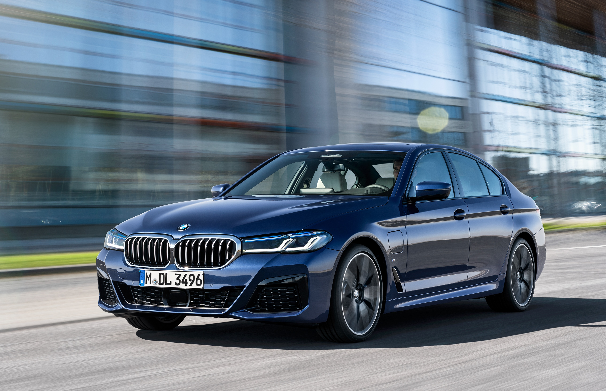
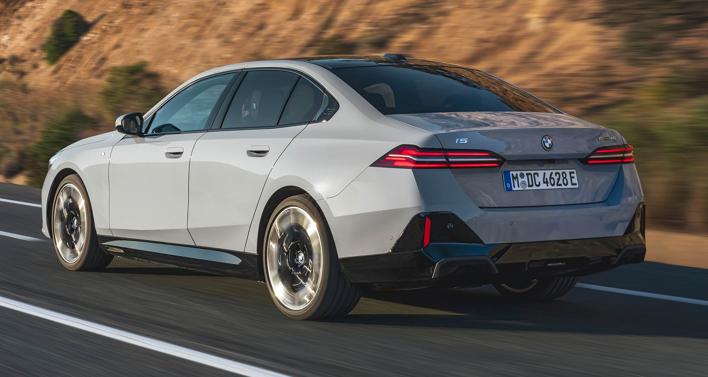
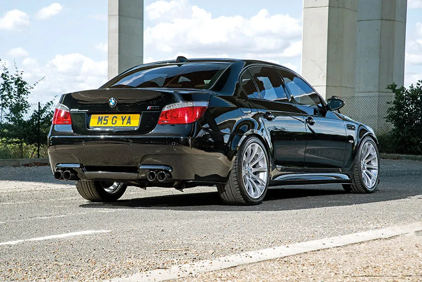
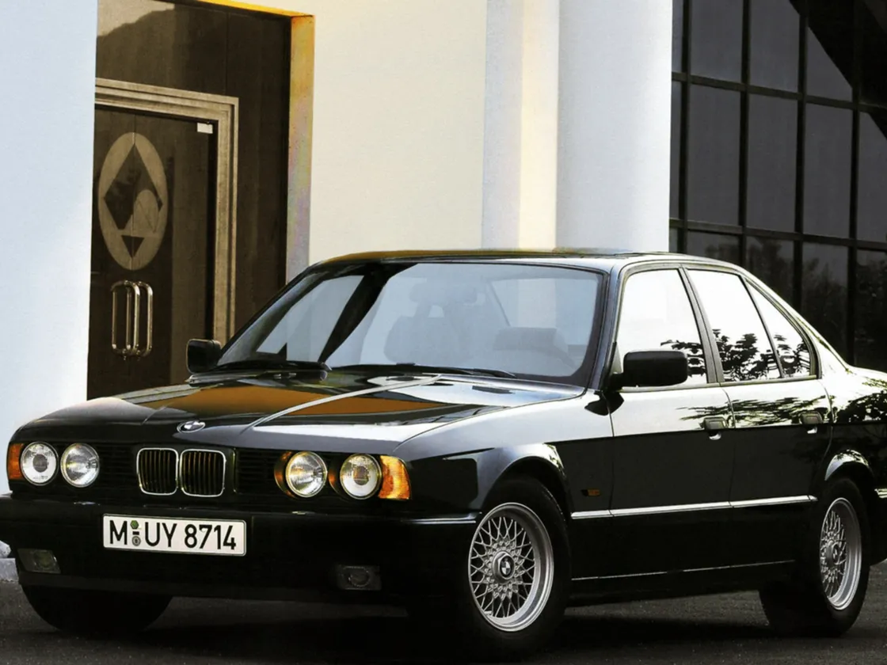

Der BMW 5er ist eine Premium-Limousine, die seit 1972 von BMW hergestellt wird.
Er ist in der Regel als Limousine oder Touring erhältlich, obwohl es auch eine besondere Version mit als Gran Turismo gibt.
Der 5er BMW ist in verschiedenen Motorvarianten erhältlich, darunter Benzin-, Diesel-, Hybrid-, und auch Vollelektrische Modelle.

Vorteile des BMW 5ers :
Fahrdynamik
Fahrkomfort
Technologie
Zuverlässigkeit
Hohe Leistung
Excellentes Platzangebot, auch für Große Menschen
Wenig Wertverlust
Nachteile des BMW 5ers:
Hohe Unterhaltskosten
Großes Auto daher wenig Praktikabilität in Parkhäusern etc
Hoher Einkaufspreis



Fazit: Ein Teures Luxusfahrzeug. Bei Älteren Modellen sollte man auf die Historie achten da die Autos mit viel innovativer Technologie gebaut wurden und diese Pflegebedürftig ist.
Hier wird Sportwagen mit Limousine eins.
